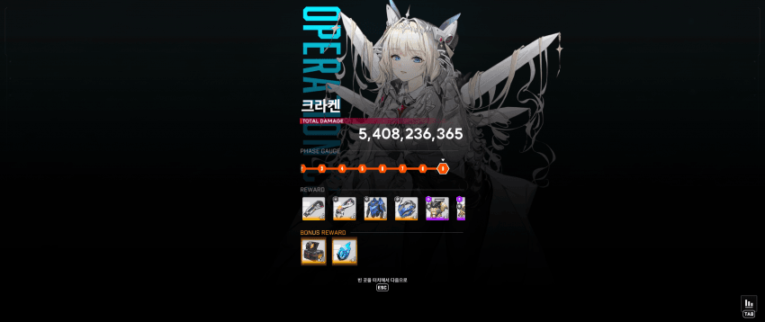
싱크 274 클리어 당시 사진
지금은 281이긴 함
0. 공략을 시작하기에 앞서
몇가지 유의사항이 있음
이 공략은 뭐 몇초에 뭘하고, 뭐 적정거리 이런 전문적인 공략이 아닌
순수하게 내가 몸 비틀면서 느낀 게임 플레이에 의거함
또한 크라켄은 뭐 패턴이 별 거 없는, 사실상 운빨 + 스펙 보스라서 그 점은 감안해야함.
스펙보고 답 없다 싶으면 도망치는 게 좋을 것 같음
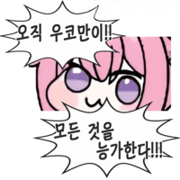
1. 스펙 및 조합
먼저 조합
나유타
아니스:스타
홍련:흑영
리버렐리오
크라운
메스트, 크라운 안 쓴 이유는 나유타의 회복이랑, 탱킹, 딜 셋 다 체감이 되게 잘되고
메스트, 아니스 같이 쓰면 1페 때 열불 터져서 버렸음
이유는 후에 서술
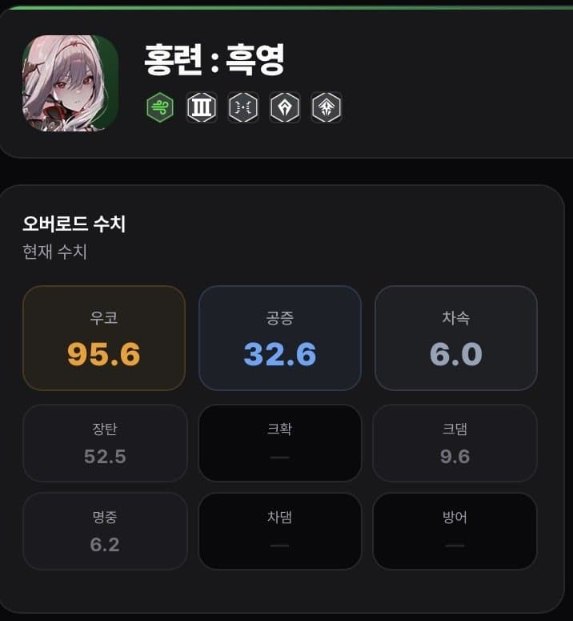
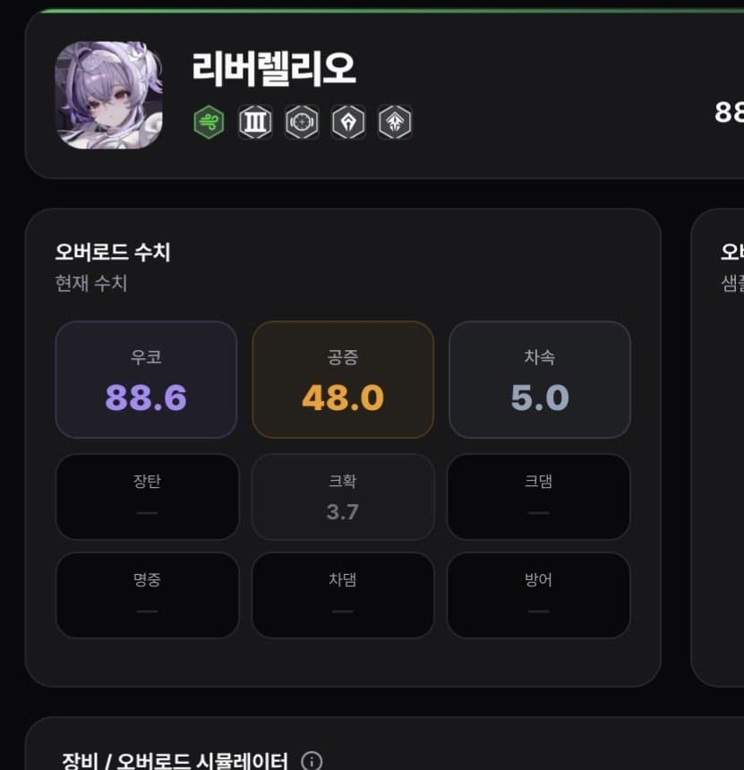
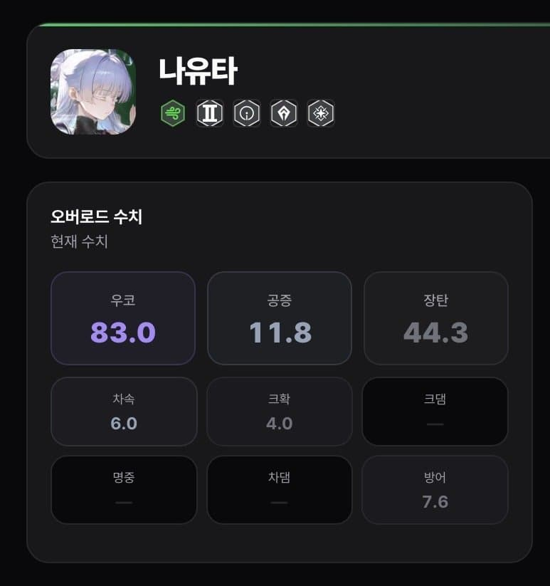
보시다시피 스펙으로 존나 비벼서 잡는 보스라서 스펙이 높음
싱크가 높을수록 덜 필요함
난 흑련이 최애캐라 모듈을 과하게 박아서 클리어 성공한 케이스
장비는 다섯명 전부 555@임
크라운, 아니스 시공증 때문에 다 찍어줌
큐브는
크라운은 탄충큡 5렙
나머지는 재장큡 8렙
이제부터 개십사파 공략임
2. 인게임 기타 공략
버스트는 흑련 선버, 흑련이 아니스 받고 리버렐렐루 허리 반으로 접음
또한 막버를 리버로 해야지 딜로스가 덜 남
버스트, 버충 존나 빡빡하게 해야함
이유는 14버스트를 갈겨야 간신히 깨는데 막버 쓰면 보통 5초 이내로 남음
마지막 버스트로 쓴 리버 장풍이랑, 공증 평타를 맞추려면 3,4초는 있어야 함

그런 이유로 난 비버스트 일 때 아니스 잡고 버충 당겨줌
다리는 무조건 왼쪽이 남
왼쪽은 4번 자리까지 코어 풀 히트가 되는데
오른쪽은 5번 빼곤 중간에 몇 대 정도 코어가 안 쳐짐
(장풍 기 모으는 중엔 오른 다리 때려야함, 왼다리는 코어 잘 안 보여서 안 맞아줌)

3. 인게임 본 공략
1페
1페이즈는 신경 쓸 패턴이 3개가 있음
다리 깨기, 장풍, 뒷다리
다리 깨기랑 장풍은 요걸 보는 니빙이면 알테니까 넘어가고
뒷다리 <-- 이 씨1발롬이 리트 유발 횟수 중 절반 가량 차지함
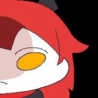
1페에선 뒷다리를 부수면 반격으로 노랑 뿅💛뿅💛이를 날리는데
첫번째 장풍 이후론 이게 존ㄴㄴㄴ나 아픔
그래서 메스트 버리고 나유타를 채용한 거임
스니스를 쓰면 뒷다리를 안 쳐도 폭발 스플뎀에 뒷다리가 거의 무조건 터지게 됨
랜덤으로 싸제끼는 저걸 아니스가 쳐맞으면 무조건 리트 (엄폐나 태보하면 살 순 있음)
메스트는 2번 맞으면 리트임
근데 나유타 (+흑리)는 2번도 버팀
또한 나유타의 힐 덕분에 맞아도 피가 차서 매우 안정적임
그래서 나유타를 채용한 거
이제 본격적인 공략임
본 공략의 알파이자 오메가인 버스트 순서를 기준으로 작성함
1. 스 나 흑
별거 없음 다리 뒤지게 패면 됨
나유타 여래신장 코어 판정 있어서 코어 맞춰줘야함
보통 2번째 다리 70% 정도 까면 끝남
2. 스 나 리
다리 깨기, 리버 공증 평타 코어 맞춰주기
이 버스트 도중에 첫 장풍 날라오는데 그냥 맞아도 됨
나유타가 힐 해줌
3. 스 나 흑
버충 잘 땡기면 장풍 맞는 순간 킬 수 있음
킨 직후에 속저 오는데 정지컨 해주면 도움 되긴 함
코어 좆집되는 2페를 빨리가야 해서 난 나오면 바로 깨줌
속저 이후엔
그냥 다리 깨기
이때부터 뒷다리 터지면 날라오는 뿅뿅이 잘 보고 아니스면 피해줘야함
크나흑리는 노 상관
4. 스 나 리
걍 다리 깨기
5. 스 나 흑
버스트 잔여시간 40% 남았을 즘에 2번째 장풍옴
이건 엄폐로 넘겨줌
이러면 엄폐 터짐
6. 스 나 리
이때가 존나 중요함
2번째 장풍 이후에 암흑 저지를 위해 크라켄이 물 안으로 도망치는데
그전에 리버 버스트를 켜서 딜을 더 넣어줄 수 있음
크라켄 옷 벗기기 전에 버스트 키고, 왼다리 때려주면 됨
몸통 코어 치면 안됨!!! 몸통 코어가 다리보다 판정 구림!!!
암흑 저지는 대충 빠르게 해주기
이것도 정지컨 해주면 시간 줄고, 실패율도 내려감
보통 1분 43초 언저리에 암흑 저지 들가면 오케이
2페
7. 스 나 흑
버스트 시간 잔여량 보며 다리 최대한 늦게 깨기
몸통 코어 존나 때리기
다리 깨는 타이밍은 다리에 있는 점멸하는 빨간원이 사라진 직후에 때려주면 얼추 맞음
(정지컨 해주면 좋음)
사실 아니스, 흑련 스플뎀으로 지좆대로 터질 때가 많으니
난 짐승새끼요, 야수의 심장이다. 하면 무시하고 코어만 뒤지게 패도 성공할 만 함
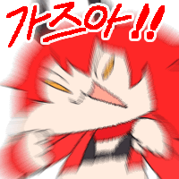
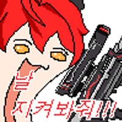
8. 스 나 리
7이랑 똑같음
9. 스 나 흑
꽤 중요한 분기점 이때 즘에 속성 저지 한번 더 나오는 데
이때까지 버스트를 존나 빨리 땡겼어야 바로 직후에 나오는 장풍을
크라운 버스트로 아슬아슬하게 막을 수 있음
(+또한 다리를 너무 빨리 부셨다면 장풍 전에 버스트 세번 못 굴릴 수 있으니 주의)
10. 스 크 리
버스트를 뒤지게 잘 굴렸다는 가정 하에 장풍 맞기 직전에 크라운 보호막 쓸 수 있음
굳이 뒤지게 빡빡하게 굴리는 이유는
직전의 속저 동안 크라켄이 머리에서 노랑 뿅💛뿅💛이를 또! 쳐 쏘는데
이게 무는왕표 콘돔을 벗겨버리면 장풍 맞고 누가 급사해서 그대로 좆됨
11, 12. 스 나 흑,리
여긴 그냥 몸통 코어 후드려 패면 됨
아마 12번 버스트 끝나거나, 끝나기 직전 쯤에 속저 나옴
버스트 끝났으면 나유타로 빠르게 속저 해주기
13. 스 크 흑
여기가 좀 걸리는 게 마지막 장풍 패턴임.
근데 여기부터는 버스트 타이밍이 이전까지의 빌드업에 영향을 받아서
크라운 보호막이 대가리 미사일에 뚫렸을 수도, 아닐 수도 있음
여기서 콘돔 뚫려서 강1간 당하는게 크라운, 흑련, 나유타면 가능성 있고
리버나 스니스면 리트
이미 싱크를 281로 올려서 재현이 안되서 잘 모르겠더라 ㅈㅅ
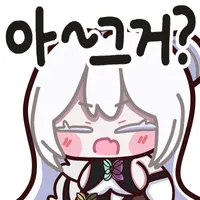
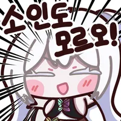
.
.
.
14. 스 나 리
여기서 끝남.
리버 버스트랑 공증 평타 코어에 잘 쑤셔박으면 아슬아슬하게 클리어됨
이게 끝임.
정말 별 거 없음
9단 진입이 43초 언저리여야 가능성 있으니 참고 바람
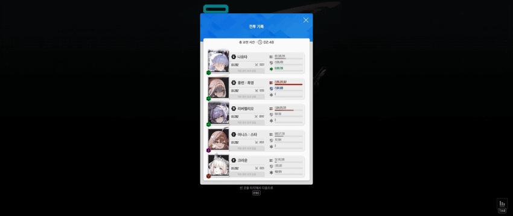
이건 오늘 클리어한 사진인거삼
보시다시피 흑련이 리버보다 1.4배 정도 쎄고
나유타가 2/3 리버 정도는 되기 때문에 메스트 안 써도 딜은 꽤 잘 나옴
그럼 모두 즐거운 문어 9단 잡이 할 수 있길 바람!!!!